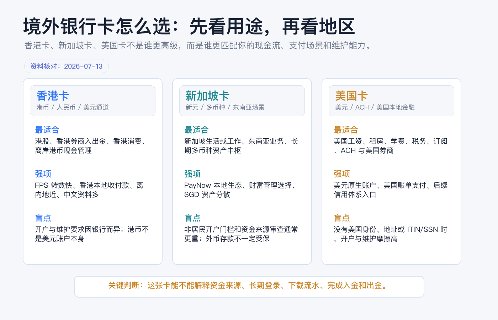
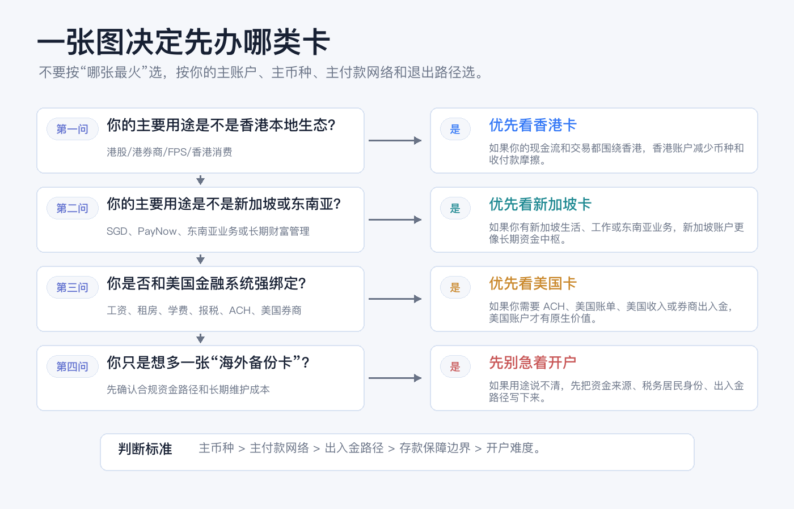
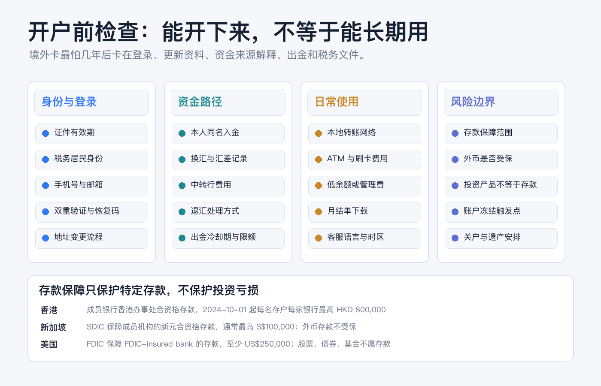

境外银行卡怎么选：香港卡、新加坡卡、美国卡分别适合谁
很多人问境外银行卡时，其实把三个问题混在了一起：我需要一个境外银行账户吗？我需要一张可以刷卡/取现的借记卡吗？我需要一个能和券商、工资、租金、学费、税务文件长期配合的金融身份吗？
这三个问题的答案不一定相同。
香港卡、新加坡卡、美国卡也不是一个由低到高的排行榜。它们分别属于不同的本地支付网络、监管体系、存款保障制度和开户维护逻辑。选错卡，短期看是多花一点手续费，长期看可能是：钱进得去但出不来，卡能刷但账户难维护，开户成功但后续解释不了资金来源。
本文为个人经验记录和账户选择框架，不构成投资、税务或法律建议，也不是开户、换汇或跨境汇款建议。跨境资金用途、税务居民身份、开户资格和银行审核要求会因个人情况变化，实际操作前以银行、监管机构和专业意见为准。资料核对日期：2026-07-14。

结论先行
如果只给一个粗略判断，我会这样分：
| 你真正需要的是 | 优先看哪类卡 | 主要原因 |
|---|---|---|
| 港股、香港券商入出金、香港消费、港币现金管理 | 香港卡 | 香港本地收付款、FPS、港币和香港金融机构配合更直接。 |
| 新加坡生活/工作、东南亚业务、SGD 资产、多币种长期中枢 | 新加坡卡 | 新元和 PayNow 生态更贴近当地生活与区域资金管理。 |
| 美国工资、租房、学费、账单、ACH、美国券商或报税 | 美国卡 | 美元原生账户和美国本地金融系统绑定最深。 |
| 只是想“有一张海外卡备用” | 先别急 | 先确认资金来源、出入金路径、税务身份和长期维护成本。 |
最不建议的选法，是只看别人说“哪张卡好开”“哪张卡高端”“哪张卡利息高”。境外银行卡的核心不是开下来那一刻，而是未来几年能不能正常登录、收款、转账、下载流水、解释资金来源、更新资料和出金。
先把“境外银行卡”拆成三层
一张境外银行卡背后至少有三层东西：
| 层级 | 你要确认的问题 |
|---|---|
| 银行账户 | 钱放在哪个司法辖区、哪个银行、什么币种、是否属于受保存款。 |
| 付款网络 | 本地转账、刷卡、取现、二维码、工资入账、券商入出金是否顺手。 |
| 合规档案 | 银行如何识别你，如何记录资金来源，如何更新地址、税务居民身份和联系方式。 |
新手容易只盯第二层：能不能刷卡，能不能转账，App 好不好用。但真正决定这张卡能不能长期持有的，往往是第一层和第三层。

不要先问哪张最好，先问五个问题
开户前我会先写下五个答案：
| 问题 | 为什么重要 |
|---|---|
| 我的主币种是什么 | 港币、新元、美元的用途不同，汇率和存款保障边界也不同。 |
| 我的主付款网络在哪里 | 香港看 FPS，新加坡看 PayNow，美国看 ACH/本地账单/工资系统。 |
| 我的钱从哪里进来 | 工资、经营收入、投资赎回、家庭支持、换汇和汇款凭证要能解释。 |
| 我的钱未来怎么出去 | 出金路径比入金路径更重要，尤其是券商、跨境汇款和关户时。 |
| 我是否能长期维护账户 | 手机号、地址、证件、税务身份变化后，能不能正常更新资料。 |
如果这五个问题答不上来，我不会急着比较银行名称。因为你缺的不是“更好的卡”，而是账户用途定义。
香港卡：适合围绕香港金融生态的人
香港卡更适合这些人：
- 经常去香港消费、取现或收付款。
- 需要给香港券商、香港保险、香港本地金融机构做同名入出金。
- 主要持有港币，或者需要港币、人民币、美元之间的多币种现金管理。
- 想先建立一个离自己较近、中文资料较多、客服和线下处理相对可触达的境外账户。
香港的优势是“本地生态密度”。香港金管局介绍 FPS 时提到，它连接银行和储值支付工具，支持个人转账、钱包充值和网上支付，并具备跨银行/钱包、接近实时、24 小时和港币/人民币支持等特点。对日常香港收付款和部分金融机构入出金来说，这类本地网络比单纯国际电汇顺手得多。
但香港卡也不是万能账户。
| 你以为它解决的问题 | 实际要再确认什么 |
|---|---|
| 有香港卡就能买所有海外资产 | 还要看券商账户、交易权限、税务表格和资金来源。 |
| 港币接近美元就等于美元账户 | 港币和美元仍是不同币种，换汇、利息和存款保障口径要分开看。 |
| 开户成功就能长期不管 | 银行会做客户尽职审查和持续监控，资料变化要及时更新。 |
| 所有香港银行存款都受保 | 只看合资格存款；离岸存款、结构性存款、股票、基金、保险、虚拟资产等不等于受保存款。 |
截至本文核对日，香港存款保障计划官网说明：自 2024 年 10 月 1 日起，每位存款人在每家成员银行的保障额提升至 80 万港元；成员银行香港办事处的港元、人民币和其他货币合资格存款都在范围内，但离岸存款、结构性存款、债券、股票、互惠基金、单位信托、保险产品和虚拟资产等不受保障。
我会把香港卡理解为：适合“香港是你的资金中转和金融操作主场”的人，而不是适合所有想拿一张境外卡的人。
新加坡卡：适合有新加坡或东南亚主场的人
新加坡卡更适合这些人：
- 在新加坡工作、生活、留学或长期居住。
- 有新加坡本地收款、租房、账单、工资或公司经营需求。
- 有东南亚业务往来，需要一个以新元和区域支付网络为中心的账户。
- 已经有一定海外资产，需要把多币种现金、定存、券商、财富管理资料放在更稳定的长期架构里。
新加坡卡的关键词不是“最容易开”，而是“长期资金中枢”。如果你的现金流在新加坡，PayNow 这样的本地支付网络会非常重要。新加坡银行公会对 PayNow 的说明是：参与银行和主要支付机构的零售客户，可以通过手机号码、NRIC/FIN 或 VPA，在新加坡银行或电子钱包账户之间即时收发新元资金，服务 24/7 可用。
但新加坡卡对纯新手不一定友好。
| 优势 | 代价 |
|---|---|
| 新元资产和本地支付生态清晰 | 如果没有新加坡生活/工作/业务关联，开户理由要更扎实。 |
| 区域财富管理选择多 | 银行通常更关注资金来源、资产规模、税务居民身份和持续关系。 |
| 适合长期多币种管理 | 外币存款、投资产品和结构性产品不一定在存款保险范围内。 |
| 对东南亚场景有价值 | 如果只是偶尔旅游或刷卡，维护成本可能高于收益。 |
新加坡的存款保险边界尤其要看清。SDIC 说明，受保存款主要是放在存款保险计划成员机构新加坡分行的新元存款，如储蓄、定期、往来账户等；外币存款、结构性存款、单位信托、股票和其他证券等投资产品不受 SDIC 保障。赔付计算上，一般把同一成员机构的受保存款合并，最高 S$100,000。
所以，新加坡卡适合“你真的要在新加坡或东南亚长期用账户”的人。它不适合只是因为听起来稳，就拿来当第一张海外卡的人。
美国卡：适合和美国系统强绑定的人
美国卡更适合这些人：
- 在美国工作、留学、居住或经常处理美国账单。
- 需要美国工资入账、租房、缴税、学费、保险、水电网、信用卡还款。
- 需要 ACH、本地 routing number、美国券商同名入出金。
- 想从银行账户开始，逐步建立美国金融关系和后续信用记录。
美国卡的价值是“美元原生”和“美国本地金融网络”。如果你需要收美国工资、交美国房租、绑定美国券商、处理 IRS 税务或付美国账单，美国银行账户很难被香港或新加坡账户完全替代。
但如果你和美国没有真实连接，美国卡可能是三类卡里维护摩擦最高的一类。
| 你要确认的点 | 说明 |
|---|---|
| 身份文件 | FDIC 的 Get Banked 页面提到，开户通常要带 SSN 或 ITIN，并用驾照、州 ID、军人证或护照等核验身份；非美国公民也可能用外国护照、领事 ID 或 ITIN 等材料，具体看银行。 |
| 地址和联系方式 | 很多银行需要能持续联系你的地址、手机号和邮件；非居民线上开户尤其容易受限。 |
| 税务文件 | 如果美国银行或券商要求证明非美国身份、处理预扣税，W-8BEN 是常见文件之一。IRS 说明，外国个人作为受益所有人，在扣缴义务人或付款方要求时提交 W-8BEN。 |
| 存款保障 | FDIC 保障的是 FDIC-insured bank 的传统存款账户，至少 $250,000；股票、债券、基金、加密资产等不是 FDIC 保障存款。 |
这里有一个常见误会：美国借记卡不是美国信用卡。开 checking/savings account 不等于自动建立信用分，也不等于以后一定能申请到美国信用卡。它只是美国金融关系的底层账户，后面的信用卡、贷款和信用记录，要看银行政策、收入、地址、税号和信用历史。
所以，美国卡适合“你有美国本地金融需求”的人，而不是适合“只想存美元”的所有人。单纯美元现金管理，有时香港或新加坡的美元账户也能完成一部分任务，但它们替代不了美国本地 ACH、账单和税务场景。

如果只能先办一张，我会这样选
场景一：我主要是港股、美股入门，资金量不大，还在学习账户链路。 我会优先考虑香港卡或能和香港券商顺畅配合的账户。原因不是它一定最好，而是它和港股、港币、香港本地金融机构的距离更近，学习成本相对低。美股交易是否需要美国卡，要看券商入出金安排，不要把“买美股”和“必须开美国银行账户”划等号。
场景二：我已经在新加坡生活、工作，或者有东南亚业务现金流。 我会优先考虑新加坡卡。因为这时你的主付款网络、工资/租房/账单和本地身份都在新加坡，新加坡卡不是装饰，而是日常金融底座。
场景三：我在美国留学、工作、租房或报税。 我会优先考虑美国卡。美国账户能解决 ACH、工资、学费、房租、账单、券商和税务文件等问题，这些是香港卡和新加坡卡很难原生替代的。
场景四：我没有明确用途，只是担心未来需要海外账户。 我会先不办，或者只做最低成本的信息准备：整理证件、地址证明、税务居民身份、收入证明、资金来源文件和可能的出入金路径。没有用途的境外卡，后面很容易变成维护负担。
三张卡也可以是组合，不必互相替代
很多人最后不是三选一，而是形成组合：
| 组合 | 适合什么人 |
|---|---|
| 香港卡 + 香港券商 | 港股、部分美股、港币现金管理和香港本地金融操作。 |
| 新加坡卡 + 新加坡券商/财富管理 | 新加坡生活、东南亚收入、多币种长期资产管理。 |
| 美国卡 + 美国券商/信用卡 | 美国本地工资、账单、税务、ACH、信用体系。 |
| 香港卡 + 美国卡 | 香港作为跨境资金中转，美国处理本地美元收入和账单。 |
| 新加坡卡 + 美国卡 | 新加坡作为区域资产中枢，美国处理美国本地金融需求。 |
组合的前提是你能解释每个账户的任务。账户越多，合规文件、税务资料、登录恢复、手续费和年检成本越高。如果只是为了“看起来更全球化”而开多个账户，后面会很难维护。
开户前的最小检查清单
真正提交申请前，我会用这张表做最后确认：
| 模块 | 通过标准 |
|---|---|
| 用途 | 写清这张卡的主场景：消费、收款、券商入出金、工资、学费、账单还是资产管理。 |
| 币种 | 知道主币种、备用币种、换汇路径和汇差记录方式。 |
| 入金 | 本人同名账户、资金来源、汇款用途、银行凭证都能说明。 |
| 出金 | 知道钱从银行/券商出来后回到哪里、多久、费用多少、失败找谁。 |
| 存款保障 | 知道哪些余额是受保存款，哪些是外币、投资、结构性产品或券商现金。 |
| 文件 | 能下载月结单、交易/转账记录、利息记录、税务表格和账户证明。 |
| 安全 | 手机号、邮箱、2FA、恢复码、备用设备和密码管理都安排好。 |
| 维护 | 证件过期、地址变化、税务身份变化、长期不用账户时，知道如何更新。 |
如果这张表里有两三项说不清，我会先补资料，不急着开户。
结尾：好卡不是最难开的卡，而是最合适的卡
境外银行卡不是身份勋章，也不是资产安全的自动按钮。它只是一个账户工具。
香港卡的价值在香港生态，新加坡卡的价值在新加坡和东南亚场景，美国卡的价值在美国本地金融系统。真正的选择标准不是“别人都开了哪张”，而是：你的钱从哪里来，未来用在哪里，是否能合法合规进出，账户能不能长期维护，风险边界是否看清楚。
先把用途写清楚，再选地区。先把资金路径画出来，再比较银行。先把维护成本算进去，再谈哪张卡更好。
参考资料
- 香港金融管理局，Account Opening and Maintenance，最后修订日期 2025-07-10。
- 香港金融管理局，Faster Payment System (FPS)。
- 香港存款保障委员会，存款保障计划。
- Singapore Deposit Insurance Corporation, Deposit Insurance Scheme and Scope of DI Coverage。
- Association of Banks in Singapore, PayNow Singapore。
- FDIC, Deposit Insurance and Get Banked。
- IRS, About Form W-8BEN。